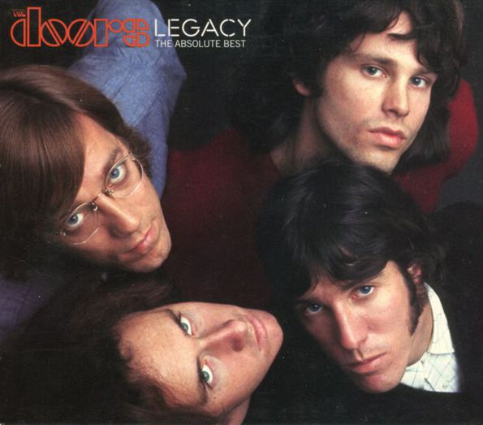
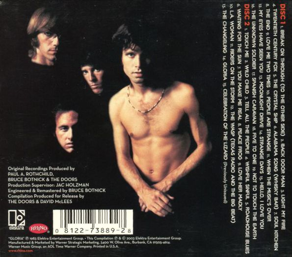

|  |
The Doors: Legacy: The Absolute Best Elektra / Rhino 2CD (August 2003) The Celebration of the Legacy / The Absolute Most Anticipated... Twenty years ago this Summer, fans of the Doors found their way to the local music outlet, others sought for the novelty online. News had been doing the rounds recently, the air was buzzing with anticipation. Bookended by two further compilation albums, 2000's "The Best of the Doors" and 2007's "The Very Best of the Doors", "Legacy: The Absolute Best" surfaced as another redundant release by the Doors and Elektra / Rhino. At least it wasn't flying under the banner of 'best of' or 'greatest hits' - there had been more than enough of those already... In 2003, surfing the wave of archival material released by the band's own Bright Midnight label, at the time there was little need for this upteenth collection of the all too standard, of the well known... A well chosen selection of songs spanning the six studio albums with Jim, plus "Gloria" from "Alive She Cried" (1983). A more than decent introduction to, indeed, the legacy of the Doors, for fresh ears. So what's up for grabs? Admittingly very well designed, this 2CD set, with several photographs sourcing from the rather rare side of things, even for seasoned Doors fans - at the time. That's the eyes covered, but what exactly is in there to treat our ears with? Nothing much of special interest? Well, maybe... Worth mentioning is the inclusion of the then still fresh uncensored mixes of both "Break on Through" and "The End" - I doubt anyone reading this here today would have no idea what I'm on about. For those already owning the 1999 box set "The Complete Studio Recordings" at the time, these were anything but a novelty. But there was one piece of bait interesting enough for many to bite and cash in anyway. "Legacy" was graced by an eye opening hype sticker, proudly announcing a previously unreleased track... The one track fans had been waiting for for many years, well knowing it was out there, with band management and record company well knowing the demand for it was high. It was nothing less than the fabled studion version of "The Celebration of the Lizard". Due for inclusion on the band's third album "Waiting for the Sun" in 1968, the epic piece in the end was featured only in printed text on the inside of the gatefold album sleeve. "Celebration" was abandoned when the band and producer Paul A. Rothchild realised it was going nowhere, they just couldn't get it right in a studio setting. Famously, the band had to quickly come up with more material to compromise the loss, to fill up side B of the record that was to reserved for "Celebration". Back to the drawing board, back to former ideas and back to the early demo tapes. One chapter of "Celebration" did go down well and found it's way onto the album, rightfully. The classic "Not to Touch the Earth"... A belter! The song truly sits among the strongest moments of the album and ranks among the Doors' all time greatest achievements; in my humble opinon it does. Over the following two years the Doors would continue to work on "Celebration" and its individual chapters in concert, resulting in its maiden appearance on "Absolutely Live" in the Summer of 1970 - recorded at the Los Angeles Aquarius Theatre, the previous year. The work in progress aura of the take featured on "Legacy" may be for completists only, for the fan who wants to hear everything. Understanding this was the ultimate studio effort, the decission to leave it be was pretty straightforward. On the other hand, it is without a doubt a unique and very important piece of Doors history. Listening today, 20 years after the initial release and revisiting for the first time in many years, I am pleasantly surprised though. Here's a brief breakdown... Kicking off with an air of tuning and getting ready to go, the very start reminds me of "Rock is Dead" in a way. The sound of the Doors warming up... "Lions in the Street" is pretty messy, not much cohesion happening there. "Wake Up" and "A Little Game" on the other hand appear in a further progressed state. So does "The Hill Dwellers", yielding John Densmore's fantastic percussion work, very different from anything we've heard before - I love it! The included runthrough of "Not to Touch the Earth" is close to breathtaking, it's a most wonderful outtake! This time it's Robby shining with an unfamiliar guitar solo during the middle section. Further variations in tone and tempo make for an incredible listening experience. "Names of the Kingdom" needed polishing still, and the closing chapter "The Palace of Exile" is missing. Bar a couple of lines from Jim, wrapping up the with a haunting vocal. Goosebumps alert! "Celebration of the Lizard" in this here perception was later repeated on the "Perception" box set, as well as on the 40th Anniversary CD version of "Waiting for the Sun". So thank you for this, something that had been in anticipation for way too long. It's just a bit of a shame the decision was made to devote the goodie to a set that hardly a soul would have turned their hard earned attention (read: money) to otherwise. Well, it wasn't the first time, and it sure a hell would not be the last either! Footnote: "Celebration of the Lizard" was left off a later US repress of "Legacy". The cardboard slipcase does list the track, yet the reimagined back of the jewel case doesn't and neither does the pink label of CD2. A box of chocolates with the chocolates gone ... Go fish, completists! © Kevin Chiotis for the Doors Quarterly Magazine Online - July 2023 |
|||
|  | ||||

|

|